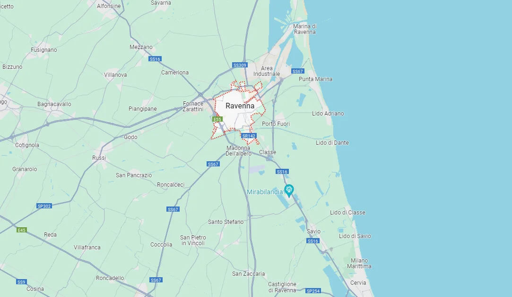
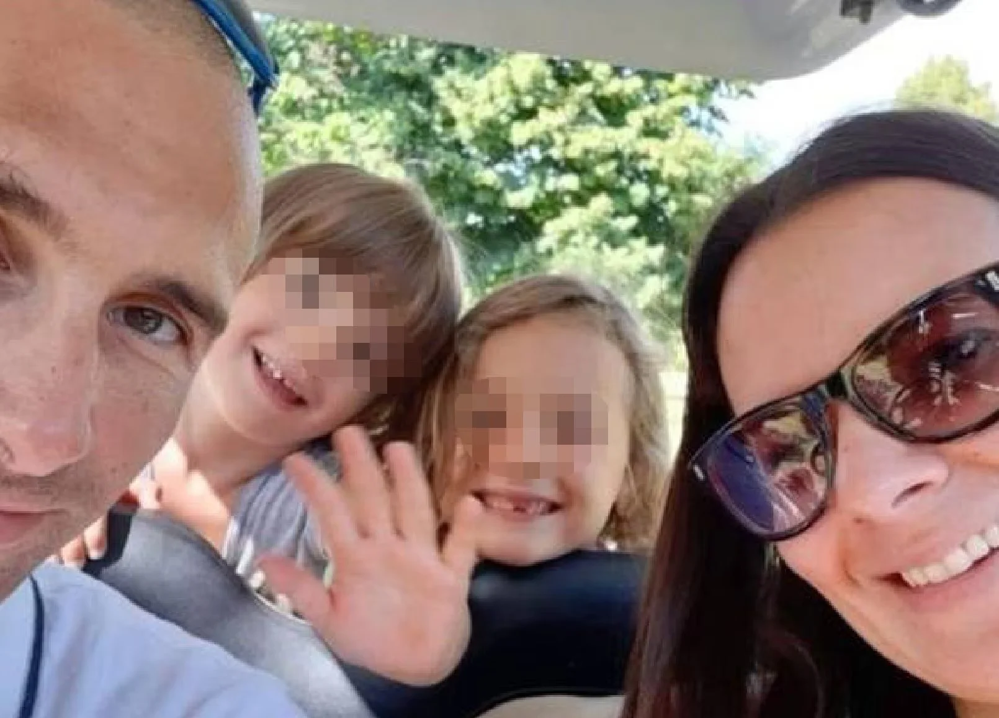
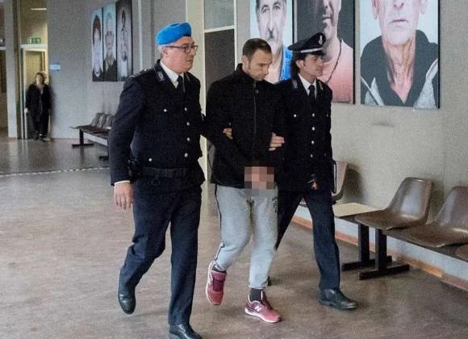

Elisa era madre di due bambine, Rebecca e Beatrice, che all’epoca dell’omicidio avevano 6 e 4 anni.
Elisa Bravi fu uccisa il 19 dicembre 2019 nella sua casa di Glorie di Bagnacavallo, immersa nella campagna di Ravenna.
Quella notte, intorno a mezzanotte, al culmine di un violento litigio, mentre erano a letto, il marito, Riccardo Pondi, che oggi ha 42 anni, le strinse le mani intorno al collo fino a strangolarla, mentre le loro due figlie di 6 e 7 anni dormivano nella stanza accanto. L'uomo, dopo essersi reso conto di quanto successo, provò anche a rianimare la moglie, ma era troppo tardi. A quel punto chiamò le forze dell'ordine: "Venite, mia moglie è morta e l’ho uccisa io".
Elisa sarà sempre ricordata come una madre straordinaria, capace di dedicare tutto il suo amore e la sua cura ai suoi cari. La tragedia della sua morte per mano del compagno getta un'ombra profonda sulla realtà dei pericoli della violenza domestica.
La prossima vittima potrebbe essere chiunque.
Anche qualcuno che conosci.
Home